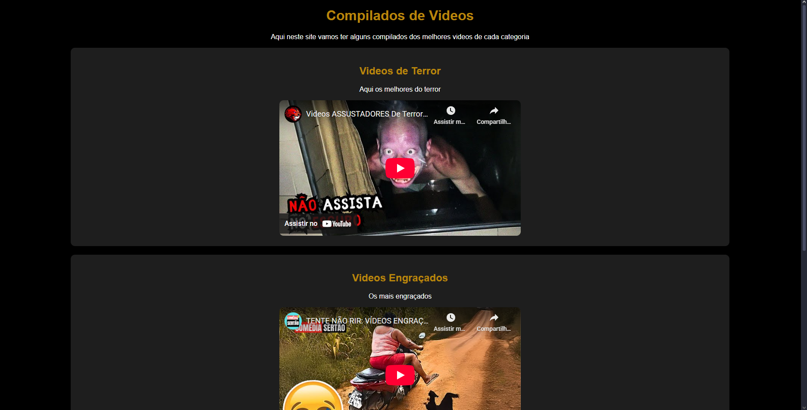
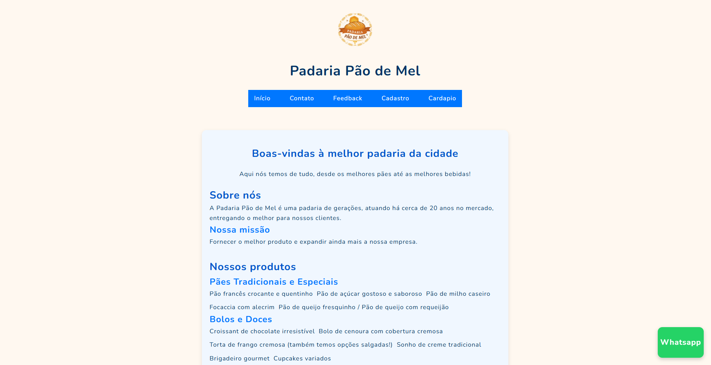

Projetos em destaque
Site de vídeo simples

Não foi meu primeiro projeto, mas foi o primeiro que publiquei. É um site que contém alguns vídeos e um CSS simples.
Visualizar projeto
Visualizar código
Jogo do número secreto
Esse foi o projeto onde tive, pela primeira vez, contato com o JavaScript. Criado durante um curso da Alura, ele foi a base da minha introdução à lógica de programação.
Visualizar projeto
Visualizar código
Padaria

Meu primeiro projeto grande, desenvolvido durante um curso da Instituição FAT. Nele utilizei alguns recursos de JavaScript e criei um site totalmente responsivo para telas menores. É um dos meus melhores projetos atualmente.
Visualizar projeto
Visualizar código